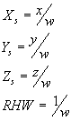

After passing through the Microsoft® Direct3D® geometry pipeline, vertices have been transformed, clipped, and scaled to fit in the viewport on the render-target surface, making them almost ready to send to the rasterizer to paint on the screen. However, the vertices are still homogeneous, and the rasterizer expects to receive vertices in terms of their x-, y-, and z-locations, as well as the reciprocal-of-homogeneous-w (RHW). Direct3D converts the homogeneous vertices to non-homogeneous vertices by dividing the x-, y-, and z-coordinates by the w-coordinate. Direct3D then produces an RHW value by inverting the w-coordinate, as in the following formulas.

The resulting values are passed to the rasterizer for display. The rasterizer uses the x- and y-coordinates as the screen coordinates for the vertex, and it uses the z-coordinate for depth comparisons in the depth buffer when z-buffering is enabled. The RHW value is used in multiple ways: for calculating fog, for performing perspective-correct texture mapping, and for w-buffering—an alternate form of depth buffering.